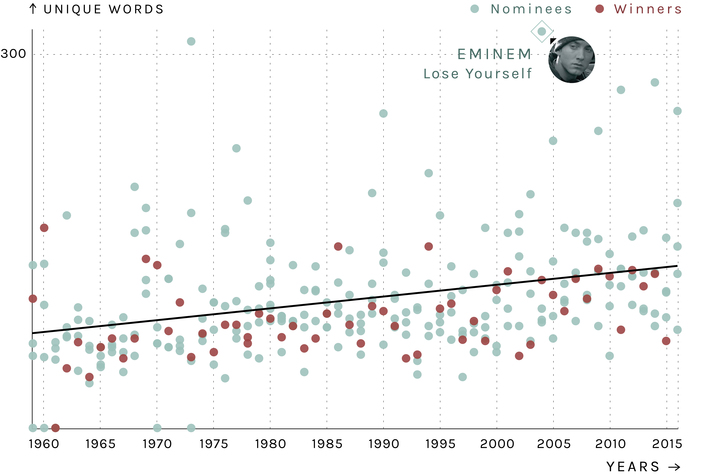
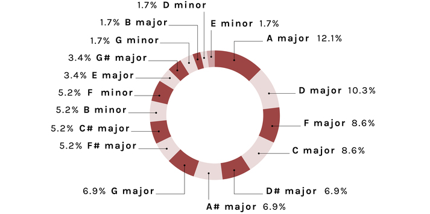
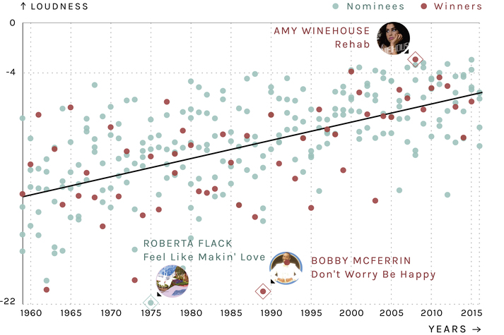
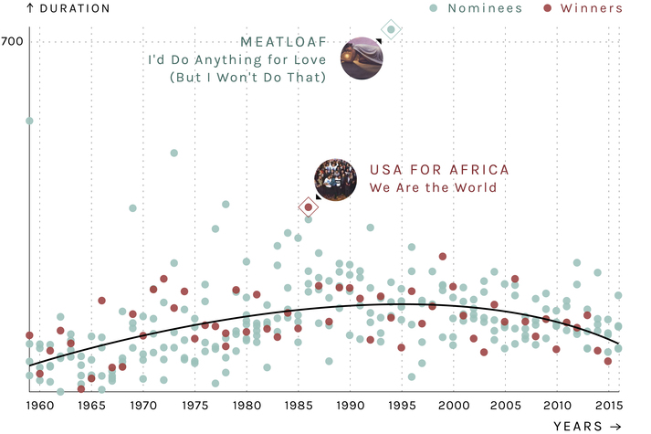
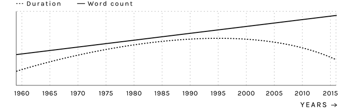
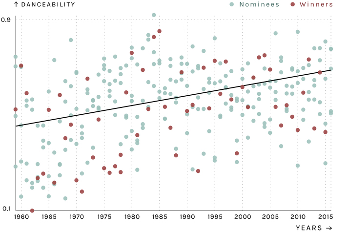

Predicting the Grammy with data
Analysing lyrics and audio to predict the Song of the Year for 2016
By Varun Jewalikar and Federica Fragapane at Musixmatch
10th February, 2016 (6 min read)
By Varun Jewalikar and Federica Fragapane at Musixmatch
10th February, 2016 (6 min read)
Since 1959, the National Academy of Recording Arts and Sciences has awarded a Grammy for Song of the Year, choosing from 5 or more nominees each year.
58 songs have won this award (there was a tie in 1978) and 237 songs have been nominated, a total of 295 songs.
At Musixmatch, we studied the trends in the lyrics and music of these songs. As a fun exercise, we used these trends to build a computational model which predicts the winner of this year's award. Here are the predictions.
Song of the year 2016 predictions
Let us take a look at the interesting trends in the lyrics and music of these songs first, and then a brief look at how the model for prediction was built.
Musixmatch automatically analyzes the language of the lyrics of every song in its database. Volare by Domenico Modugno, performed in Italian, is the only non English song to ever win this award. La Bamba by Los Lobos, performed in Spanish, is the only other non English song to be nominated. The other songs are mainly in English or instrumental.
The wordiest song (total words and unique words) to win the Song of the Year is The Battle of New Orleans by Johnny Horton. The wordiest nominee is I'd Do Anything For Love (But I Won't Do That) by Meatloaf but if we count unique words Lose Yourself by Eminem comes out on the top.
Total word count
The total word count rises by almost 4 words every year.
Unique word count
The unique word count rises by almost 1 word every year.
Rolling In the Deep by Adele is the only song with a profanity (shit) to win this award. 17 other nominated songs contain profanity.
Songs containing profanity
Musixmatch automatically analyzes whether a song is instrumental or not. Only 6 instrumental songs have been nominated for Song of the year and of them only one, Theme of Exodus by Ernest Gold (1961), has won the award.
Instrumental songs
Doc2Vec, a deep learning model by Google, automatically infers the semantics in pieces of text and places each text in an n-dimensional space, such that texts which are similar are located closer.
We trained this model (Doc2Vec by Google) using 150k lyrics and n = 100. This model outputs 100 lyrics metrics (apart from the ones above), for the nominees and winners, which we used for training the award prediction model.
It is difficult to explain which characteristic of the text corresponds to each of the metric output by this Doc2Vec model but a more detailed explanation can be found here.
Echonest, a music intelligence platform, provides many interesting musical metrics calculated from the audio signal of a song. We scanned the 295 songs studied here in the Echonest database and these are some of the interesting musical trends.
In music theory, the key of a piece is the tonic note and chord that provides a subjective sense of arrival and rest. Other notes and chords in the piece create varying degrees of tension, resolved when the tonic note or chord returns - Wikipedia
Generally, popular music has a well defined key and the songs studied here as well.
Winners
A major is the key most used by the winners followed by D major, C major and F major.

Nominees
C major is used most by the nominees followed by G major and F major.
Echonest averages loudness across the whole song and returns a negative number with 0 being the loudest level possible.
The loudest song to win this award is Rehab by Amy Winehouse while the quietest one is Don't Worry Be Happy by Bobby McFerrin. The quietest song overall is Feel Like Makin' Love by Roberta Flack while the loudest one is also Rehab.
Loudness
Across the nominees and winners, a steady increase of 0.17 unit/year of loudness is observed.
This increase is termed by experts as loudness wars. For the curious readers, there is a very detailed website dedicated to this.
We Are the World by USA for Africa is the longest song (427 seconds) to win the award. I'd Do Anything For Love (But I Won't Do That) by Meatloaf is the longest song (721 seconds) to be nominated, it is also the song with the highest word count.
Duration in seconds
We see a steady rise in the duration till the mid 90s and then a decline. This could perhaps be due to the increase in Hiphop/Dance songs (shorter than other genres) getting nominated.
Duration and total word count trend
Overlaying the duration trend with the total word count trend we can see a decrease in the duration but an increase in the word count after the 90s. This could be because of more Hiphop songs and songs containing Rap verses getting nominated.
Describes how suitable a track is for dancing using a number of musical elements (the more suitable for dancing, the closer to 1.0 the value). The combination of musical elements that best characterize danceability include tempo, rhythm stability, beat strength, and overall regularity - Echonest
It is an interesting metric even though not decisive in choosing the winner (according to our model as discussed later).
Danceability
The danceability of Song of the Year nominees and winners has been rising (.0007 unit/year).
This means that the nominees and winners have become more danceable over the years.
A brief breakdown of the steps involved in making a prediction.
Apart from making a prediction the above model can also tell us which metrics were decisive in understanding whether a song is a nominee or a winner (feature importances).
Considering all important metrics (71 lyrics metrics and 17 audio metrics), lyrics contributed 4 times as much as music in deciding a winner for Song of the year. This comparison is not fair because there are more lyrics metrics than audio.
Summing the importances of the 17 most important lyrics and audio metrics, lyrics are twice as decisive as music in predicting the winner for Song of the Year.
Importance in deciding a winner
Combining all the nominees and winners in this category gives us a total of 295 songs (58 winners and 232 nominees - excluding the nominees of 2016). This is not enough data to build an accurate model and also there are many factors (social impact, popularity, etc) which haven't been modeled here. Thus, these predictions should be taken with a very big pinch of salt.
We have observed that the lyrics are getting longer while the songs themselves are getting shorter. At the same time the loudness is increasing. We also observe computationally that lyrics are more important than music in choosing a winner.
We will continue exploring these trends in more detail in the future. Please subscribe to our mailing list to be notified of new articles.